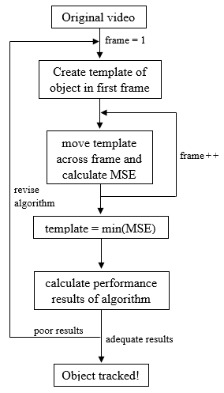

The objective of this experiment was to track the objects in the videos. I began by splitting the first frame into three color channels (red, green, blue), which would be processed in parallel and recombined once the object was found. The initial template was defined by the ground truth rectangle, and was moved across the next frame of the video while calculating the mean square error at every pixel. The lower the mean square error, the more similar the template was to the image at that location. The mean square errors for the three images were averaged at every pixel, and the minimum average was the location of the template in the frame. The next template was set to this location, and was used for the next frame, repeating this process for all frames.
Flowchart of object-tracking algorithm

Girl dataset, found objects (orange) and ground truth (red)
Biker dataset, found objects (orange) and ground truth (red)
Deer dataset, found objects (orange) and ground truth (red)
Videos of found objects (orange) compared with ground truth (red).: